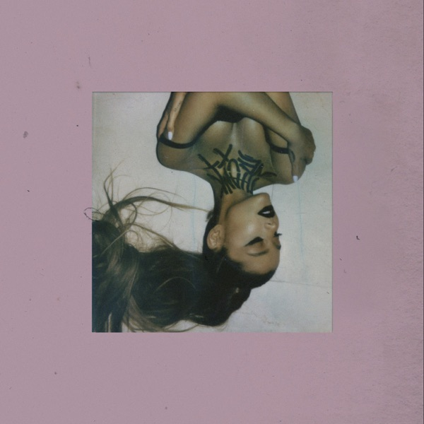
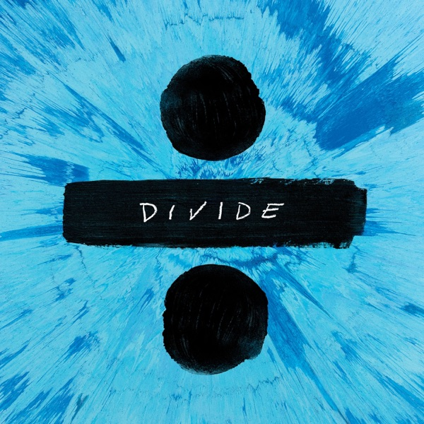

Code
library(tidyverse)
library(plotly)
# Read the analyzed data
features <- read_csv("data/album_features.csv", show_col_types = FALSE)
similarities <- read_csv("data/album_similarity.csv", show_col_types = FALSE)library(tidyverse)
library(plotly)
# Read the analyzed data
features <- read_csv("data/album_features.csv", show_col_types = FALSE)
similarities <- read_csv("data/album_similarity.csv", show_col_types = FALSE)To see how much popular album covers look like one another, we extracted visual features from 20 of the biggest pop albums of the last decade:
Hover over each point to see which album it represents. Points are tinted using the album cover’s own average color:
p <- ggplot(features, aes(
x = brightness,
y = colorfulness,
text = paste0(artist, " - ", album, " (", release_year, ")")
)) +
geom_point(aes(color = avg_color_hex), size = 4) +
scale_color_identity() +
theme_minimal(base_size = 13) +
labs(
title = "Album Covers: Brightness vs. Colorfulness",
x = "Brightness (0 = dark, 1 = bright)",
y = "Colorfulness Index"
)
ggplotly(p, tooltip = "text")These pairs had the highest visual similarity scores based on their color composition and layout:
similarities |>
slice_head(n = 5) |>
mutate(similarity_pct = scales::percent(similarity, accuracy = 0.1)) |>
select(
"Album 1" = album_1,
"Album 2" = album_2,
"Similarity" = similarity_pct
) |>
knitr::kable()| Album 1 | Album 2 | Similarity |
|---|---|---|
| Ariana Grande - Sweetener | Harry Styles - Harry’s House | 96.8% |
| Ariana Grande - Thank U, Next | Taylor Swift - Lover | 96.5% |
| Taylor Swift - 1989 | Ariana Grande - Thank U, Next | 96.1% |
| Ariana Grande - Sweetener | Taylor Swift - Lover | 95.9% |
| Taylor Swift - 1989 | Taylor Swift - Lover | 95.9% |
Ariana Grande’s Thank U, Next and Taylor Swift’s Lover share soft pink hues and dreamy textures:


These pairs showed the lowest visual similarity scores:
similarities |>
slice_tail(n = 5) |>
arrange(similarity) |>
mutate(similarity_pct = scales::percent(similarity, accuracy = 0.1)) |>
select(
"Album 1" = album_1,
"Album 2" = album_2,
"Similarity" = similarity_pct
) |>
knitr::kable()| Album 1 | Album 2 | Similarity |
|---|---|---|
| Ed Sheeran - Divide | Billie Eilish - When We All Fall Asleep, Where Do We Go? | 20.6% |
| Billie Eilish - When We All Fall Asleep, Where Do We Go? | Olivia Rodrigo - Guts | 22.7% |
| Billie Eilish - When We All Fall Asleep, Where Do We Go? | The Weeknd - After Hours | 29.1% |
| Rihanna - Anti | Billie Eilish - When We All Fall Asleep, Where Do We Go? | 31.9% |
| Dua Lipa - Future Nostalgia | Olivia Rodrigo - Guts | 32.4% |
Ed Sheeran’s vibrant blue Divide contrasts strongly with Billie Eilish’s dark, monochromatic cover:
